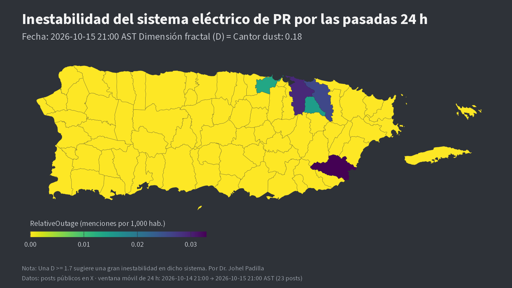

Menciones públicas en X
Publicaciones públicas que mencionan a @aeeonline, @lumaenergypr y @Genera_PR. Se analizan de forma agregada por municipio; no se reproduce su contenido.
Proyecto de investigación · Puerto Rico
Proyecto de investigación en fase experimental. Los mapas, los clasificadores y el índice de riesgo no han sido validados para uso operacional.
HabraHoy publica diariamente a las 9:00 PM (hora de Puerto Rico) una síntesis cartográfica de las menciones públicas de interrupciones del servicio eléctrico por municipio, acompañada de una estimación experimental del riesgo de interrupciones de gran escala. Dicha estimación no constituye un pronóstico.
HabraHoy es un proyecto de investigación en salud pública y sistemas complejos. Recopila menciones públicas en X relacionadas con interrupciones del servicio eléctrico, las asigna geográficamente por municipio y difunde diariamente mapas de la isla y de seis regiones.
El proyecto es independiente y complementa, sin sustituir, la información de las entidades responsables del servicio. Utiliza exclusivamente datos públicos; su metodología se documenta en esta página.
Publicaciones públicas que mencionan a @aeeonline, @lumaenergypr y @Genera_PR. Se analizan de forma agregada por municipio; no se reproduce su contenido.
Registro independiente del porcentaje de clientes sin servicio, utilizado para identificar y validar interrupciones de gran escala.
Datos de interrupciones del Departamento de Energía de EE. UU. (ORNL), empleados como fuente de validación adicional.
Población municipal para normalizar las menciones por cada 1,000 habitantes, y nomenclatura oficial de barrios para la desambiguación de topónimos repetidos.
El proyecto combina dos marcos no clásicos: (i) una transformación heurística inspirada en la universalidad de Feigenbaum en la ruta al caos por duplicación de período, y (ii) un enfoque ordinal y simbólico de la información, en lugar de la entropía de Shannon calculada sobre amplitudes. Esta sección describe exclusivamente lo que se implementa en el código, indicando qué componentes son exploratorios.
Antecedente. En aplicaciones unimodales $x_{n+1}=f_r(x_n)$ (p. ej., la logística $f_r(x)=r\,x(1-x)$), la secuencia de bifurcaciones por duplicación de período $r_1<r_2<\dots$ converge geométricamente al umbral del caos $r_\infty$, con razón universal
$$\delta=\lim_{n\to\infty}\frac{r_{n}-r_{n-1}}{r_{n+1}-r_{n}}\approx 4.669201609\ldots,$$y las escalas espaciales de los ciclos se contraen según el factor universal $\alpha\approx 2.502907875\ldots$ (Feigenbaum, 1978; 1979). La universalidad establece que estos valores son independientes de los detalles de $f$ dentro de la clase de aplicaciones con un máximo cuadrático.
Definición operativa (Vigilancia.R). Sea $X$ el número de menciones filtradas en una ventana y $k$ el número de días que abarca ($k=2$ para el horizonte de 3 h, sobre las dos últimas clases diarias; $k=2.5$ para el horizonte de 120 h, sobre la ventana completa, con $X=X_1$). Se define la intensidad saturada
$$Z=\frac{X/k}{X/k+1}\in[0,1),$$y el índice
$$R=\frac{Z^{\,e^{\delta}}}{Z^{\,e^{\alpha}}}=Z^{\,e^{\delta}-e^{\alpha}}\approx Z^{\,94.39}.$$El valor publicado es $100\,R$ (%), truncado a «<0.005» o «>99 %» en los extremos.
Estatus. $R$ es una transformación heurística de la intensidad de menciones, monótona creciente en $X$, que concentra la probabilidad cerca de $Z\to1$. No se deriva de una ley física ni se ha demostrado que la red eléctrica siga una ruta de duplicación de período; las constantes $\delta$ y $\alpha$ fijan el exponente, pero su uso es una analogía de diseño. Su calibración frente a eventos observados está en curso bajo un protocolo preregistrado.
Sea $\rho_i$ la tasa de menciones por cada 1,000 habitantes del municipio $i$ en las últimas 24 h (Censo 2020). El mapa reporta
$$D=\sqrt{\max_i \rho_i},\qquad F=\frac{D}{\sqrt{0.17}},$$con las etiquetas «Cantor dust» si $D<1$ y «too chaotic» si $D>3$; la nota del mapa sugiere inestabilidad amplia para $D\ge1.7$, un criterio experimental no validado. $F$ se denomina factor de riesgo fractal, y 0.17 es un nivel de referencia fijado por el autor.
Estatus. $D$ es un indicador descriptivo nombrado por analogía con la dimensión fractal; no es una estimación de dimensión de Hausdorff ni de conteo de cajas, y depende de la escala de normalización (×1,000).
Dada una serie $\{x_t\}$, dimensión de inmersión $m$ y retardo $\tau_d$, cada vector $(x_t,x_{t+\tau_d},\dots,x_{t+(m-1)\tau_d})$ se asigna a la permutación $\pi\in S_m$ que ordena sus componentes. Con frecuencias relativas $p(\pi)$, la entropía de permutación normalizada es (Bandt y Pompe, 2002; Zanin et al., 2012)
$$H_m=-\frac{1}{\log m!}\sum_{\pi\in S_m}p(\pi)\log p(\pi)\in[0,1].$$Justificación del orden frente a la magnitud. Los conteos de menciones son discretos, dispersos, ruidosos y no estacionarios (ciclo día/noche, actividad variable de la plataforma). Para toda $g$ estrictamente creciente, $\pi\big(g(x)\big)=\pi(x)$: los estadísticos ordinales son invariantes a transformaciones monótonas, por lo que no dependen de la escala ni de la normalización y son menos sensibles a valores extremos que la entropía de Shannon estimada sobre amplitudes.
Estatus. $H_m$ forma parte del marco conceptual; en la versión actual del sistema no se calcula de manera operativa.
Para dos series $x,y$ en una ventana de $W$ observaciones, con $C$ y $D_c$ pares concordantes y discordantes, la concordancia de Kendall (1938) es
$$\tau_a=\frac{C-D_c}{\binom{W}{2}}=\frac{1}{\binom{W}{2}}\sum_{i<j}\operatorname{sgn}(x_j-x_i)\,\operatorname{sgn}(y_j-y_i),$$y $\tau_b$ es su versión corregida por empates. Systemic Tau resume la coherencia relacional del sistema como el promedio sobre un conjunto de aristas $E$ (aquí, pares de municipios o regiones colindantes):
$$\tau_s(t)=\frac{1}{|E|}\sum_{(u,v)\in E}\tau_b^{(u,v)}(t),$$calculado en ventanas de $W=13$ h con paso de 1 h sobre $x_i(t)=$ menciones$_i(t)$/total de publicaciones en la hora $t$. Funciona como disparador homeostático sin etiquetas: se fija un punto de referencia $\bar\tau_b^{(e)}$ en un periodo de calibración y se calcula la desviación
$$\Delta(t)=\frac{1}{|E|}\sum_{e\in E}\big|\tau_b^{(e)}(t)-\bar\tau_b^{(e)}\big|,$$con alarma si $\Delta(t)>\mu_{\text{cal}}(\Delta)+3\,\sigma_{\text{cal}}(\Delta)$ y un periodo refractario de 13 h. $\tau_s$ mide coherencia, no riesgo.
Estatus: exploratorio. Supuestos: la homeostasis del sistema se refleja en la concordancia ordinal entre unidades vecinas, y el periodo de calibración representa un estado basal. Limitaciones: series muy dispersas con muchos empates (gran parte de las aristas son constantes en cada ventana), una muestra pequeña y no geolocalizada, y la posibilidad de que la calibración incluya eventos. En las evaluaciones ciegas, la alarma no detectó ninguno de los eventos; no se utiliza para emitir alertas.
Recurso complementario: Route learning con Systemic Tau, sitio del autor con una demostración del aprendizaje de rutas mediante concordancia ordinal (Systemic Tau). Material exploratorio.
Un modelo de lenguaje determina si una mención describe una interrupción del servicio, con independencia del vocabulario empleado. En una evaluación ciega con 150 publicaciones no utilizadas en su desarrollo, obtuvo una sensibilidad de 0.90, frente a 0.68–0.70 de los clasificadores por palabras clave.
Se emite una alerta cuando 787daily marca al menos 5 % de clientes sin servicio en una región o 10 % en toda la isla.
Para fines de estimación, se define como la pérdida de servicio de al menos el 10 % de los clientes de la isla o el 25 % de una región.
Probabilidad estimada de un evento de gran escala en horizontes de 3 y 120 horas. Su recalibración con datos históricos sigue un protocolo registrado antes del análisis.
El marco parte de la hipótesis de que un sistema sometido a estrés modifica la estructura ordinal de sus fluctuaciones antes de una falla. Systemic Tau caracteriza esa dinámica mediante patrones ordinales (Bandt y Pompe) y concordancia de rangos (Kendall).
Resultados a la fecha: en las evaluaciones ciegas, el indicador Tau no detectó ninguno de los eventos, mientras que el criterio de porcentaje detectó 2 de 4. En consecuencia, el Tau no se utiliza para emitir alertas; se calcula en paralelo con fines de validación. El proyecto no ofrece capacidad predictiva validada.
Ejemplo: mapa publicado el 15 de octubre de 2026.

La ausencia de menciones no implica ausencia de interrupciones; el mapa refleja únicamente lo reportado públicamente.
Proyecto de investigación en fase experimental; los resultados no han sido validados para uso operacional. HabraHoy no está afiliado a LUMA Energy, a la AEE, a Genera PR ni a ninguna agencia gubernamental. Las emergencias y averías deben notificarse por los canales oficiales.